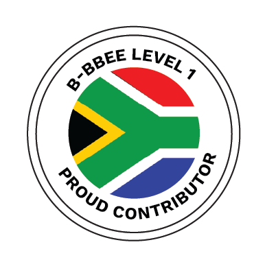

Why L&D Must Be a Strategic Driver, Not Admin
Most organisations don't have a training problem. They have a capability problem. Discover why L&D must move from administration to strategic business driver.
Read Article →Many organisations know the QCTO transition is happening. But very few know how to prepare for it. The shift to the Quality Council for Trades and Occupations is changing how organisations approach training, workplace learning, and occupational qualifications.
Yet many employers are still asking the same questions:
Under the new framework driven by the Department of Higher Education and Training, organisations will need to strengthen the link between training, workplace experience, and measurable competency.
This transition creates both a challenge and an opportunity. Organisations that understand the QCTO framework early will be better positioned to adapt and thrive.
Organisations should start by assessing their existing learnerships and training programmes. This helps identify where programmes align with QCTO occupational qualifications and where gaps need to be addressed.
Training programmes should be mapped to the relevant unit standards or qualifications. This ensures employees develop the competencies required for national recognition and workplace relevance.
Workplace experience is essential. Organisations should embed practical, on-the-job learning into training programmes so employees can apply theoretical knowledge immediately and develop real, job-ready skills.
The External Integrated Summative Assessment (EISA) is a key component of the QCTO framework. Organisations should support learners with pre-assessment coaching, practical simulations, and portfolio development to ensure they are ready to succeed.
Training is only effective if outcomes can be measured. Organisations should implement systems to track skills application, workplace performance, and competency development, ensuring training investments result in real workplace capability.
While the QCTO transition presents challenges, it also creates opportunities for organisations to:
We work closely with organisations to navigate these changes, helping them adapt training strategies to meet national standards and achieve measurable results.
If your organisation is reviewing its training strategy or exploring occupational qualifications, let's start the conversation. Our goal is simple: ensure your training investments translate into real workplace capability.
Our team can help you review your training strategy, align with occupational qualifications, and prepare for EISA.
Get in Touch →Most organisations don't have a training problem. They have a capability problem. Discover why L&D must move from administration to strategic business driver.
Read Article →Master the Training Needs Analysis (TNA) process. A step-by-step guide to aligning training initiatives with organisational goals and individual needs.
Read Article →Learn how to leverage Personal Development Plans (PDPs) to drive employee growth, engagement, and performance through personalised development strategies.
Read Article →Let's discuss how Pakanyo HR Solutions can support your organisation through the QCTO transition.
